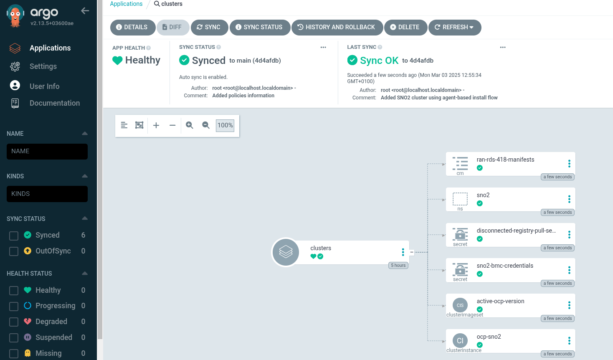
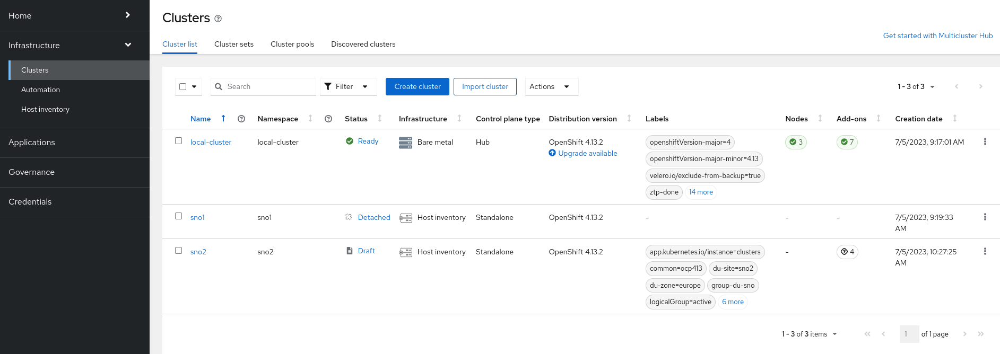
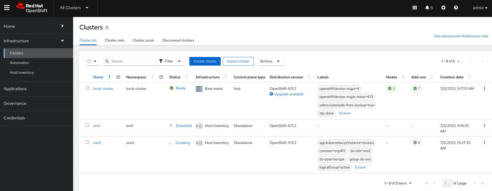
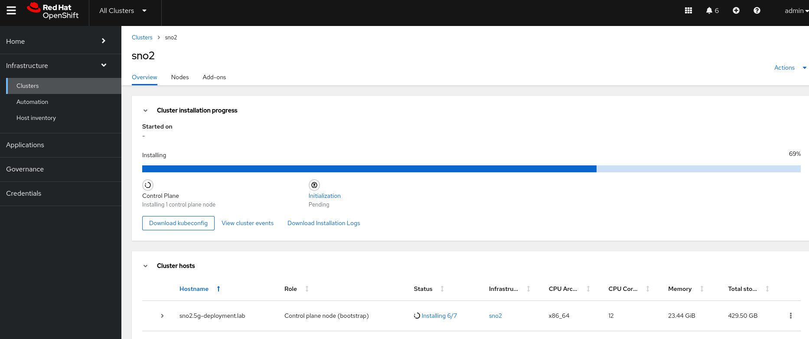
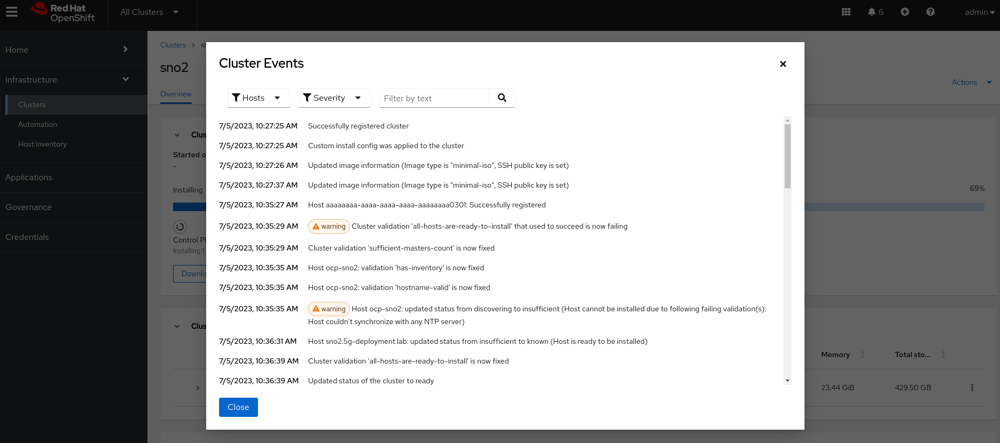
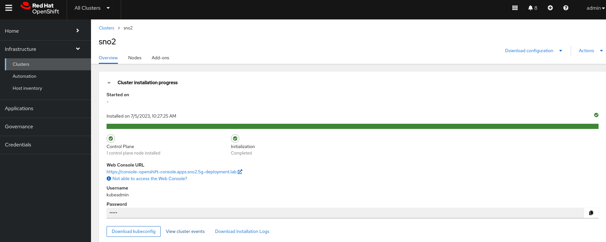

Deploying an Agent Based Install Cluster
Introduction
As detailed in the Agent Based Installation section, this installation method combines the ease of use of the Assisted Installation service with the ability to run offline. It also optionally generates or accepts Zero Touch Provisioning (ZTP) custom resources. In this part of the lab, we will:
-
Create the prerequisites for the SNO cluster installation.
-
Define the SNO cluster as a
ClusterInstanceCR. -
Include any extra configuration required for our telco 5G RAN-specific use case.
-
Commit all manifests into the
ztp-repositoryGit repo, where the OpenShift GitOps operator automatically applies the changes.
Bare Metal Node Details
The details for our bare-metal node, which we want to provision as SNO ABI, are as follows:
-
RedFish Endpoint:
redfish-virtualmedia://192.168.125.1:9000/redfish/v1/Systems/local/sno-abi -
MAC Address:
aa:aa:aa:aa:03:01 -
Primary disk:
/dev/vda -
BMC User:
admin -
BMC Password:
admin
Deployment Prerequisites
Before working on the ClusterInstance, let’s add some information required for the deployment into the Git repository.
| In a production environment, you should not add sensitive information in plain text to your Git repository. For simplicity in this lab, we are adding this information in plain text so you don’t have to manage it. This applies to items like pull secrets or BMC credentials. |
-
BMC credentials file.
cat <<EOF > ~/5g-deployment-lab/ztp-repository/site-configs/pre-reqs/sno-abi/bmc-credentials.yaml --- apiVersion: v1 kind: Secret metadata: name: sno-abi-bmc-credentials namespace: sno-abi data: username: "YWRtaW4=" password: "YWRtaW4=" type: Opaque EOF -
Pull secret for accessing the disconnected registry.
cat <<EOF > ~/5g-deployment-lab/ztp-repository/site-configs/pre-reqs/sno-abi/pull-secret.yaml --- apiVersion: v1 kind: Secret metadata: name: disconnected-registry-pull-secret namespace: sno-abi stringData: .dockerconfigjson: '{"auths":{"infra.5g-deployment.lab:8443":{"auth":"YWRtaW46cjNkaDR0MSE="}}}' type: kubernetes.io/dockerconfigjson EOF -
Namespace for the SNO ABI cluster.
cat <<EOF > ~/5g-deployment-lab/ztp-repository/site-configs/pre-reqs/sno-abi/ns.yaml --- apiVersion: v1 kind: Namespace metadata: name: sno-abi EOF -
Kustomization file for the SNO ABI pre-reqs.
cat <<EOF > ~/5g-deployment-lab/ztp-repository/site-configs/pre-reqs/sno-abi/kustomization.yaml --- apiVersion: kustomize.config.k8s.io/v1beta1 kind: Kustomization resources: - bmc-credentials.yaml - pull-secret.yaml - ns.yaml EOF -
Kustomization file for the clusters pre-reqs.
cat <<EOF > ~/5g-deployment-lab/ztp-repository/site-configs/pre-reqs/kustomization.yaml --- apiVersion: kustomize.config.k8s.io/v1beta1 kind: Kustomization resources: - sno-abi/ EOF
ClusterInstance
Now that we have the pre-reqs, let’s jump into the ClusterInstance.
Copy the command below and refer to the comments in the code for explanations.
cat << 'EOF' > ~/5g-deployment-lab/ztp-repository/site-configs/hub-1/ocp-sno-abi.yaml
---
apiVersion: siteconfig.open-cluster-management.io/v1alpha1
kind: ClusterInstance
metadata:
name: "ocp-sno-abi"
namespace: "sno-abi"
spec:
additionalNTPSources:
- "clock.corp.redhat.com"
baseDomain: "5g-deployment.lab"
clusterImageSetNameRef: "active-ocp-version"
clusterName: "sno-abi"
clusterNetwork:
- cidr: "10.128.0.0/14"
hostPrefix: 23
cpuPartitioningMode: AllNodes
extraLabels:
ManagedCluster:
common: "ocp418"
logicalGroup: "active"
group-du-sno: ""
du-site: "sno-abi"
du-zone: "europe"
hardware-type: "hw-type-platform-1"
holdInstallation: false
extraManifestsRefs:
- name: ran-rds-418-manifests
installConfigOverrides: |
{
"capabilities": {
"baselineCapabilitySet": "None",
"additionalEnabledCapabilities": [
"NodeTuning",
"OperatorLifecycleManager",
"Ingress"
]
}
}
machineNetwork:
- cidr: "192.168.125.0/24"
networkType: "OVNKubernetes"
pullSecretRef:
name: "disconnected-registry-pull-secret"
serviceNetwork:
- cidr: "172.30.0.0/16"
sshPublicKey: "ssh-rsa AAAAB3NzaC1yc2EAAAADAQABAAACAQC5pFKFLOuxrd9Q/TRu9sRtwGg2PV+kl2MHzBIGUhCcR0LuBJk62XG9tQWPQYTQ3ZUBKb6pRTqPXg+cDu5FmcpTwAKzqgUb6ArnjECxLJzJvWieBJ7k45QzhlZPeiN2Omik5bo7uM/P1YIo5pTUdVk5wJjaMOb7Xkcmbjc7r22xY54cce2Wb7B1QDtLWJkq++eJHSX2GlEjfxSlEvQzTN7m2N5pmoZtaXpLKcbOqtuSQSVKC4XPgb57hgEs/ZZy/LbGGHZyLAW5Tqfk1JCTFGm6Q+oOd3wAOF1SdUxM7frdrN3UOB12u/E6YuAx3fDvoNZvcrCYEpjkfrsjU91oz78aETZV43hOK9NWCOhdX5djA7G35/EMn1ifanVoHG34GwNuzMdkb7KdYQUztvsXIC792E2XzWfginFZha6kORngokZ2DwrzFj3wgvmVyNXyEOqhwi6LmlsYdKxEvUtiYhdISvh2Y9GPrFcJ5DanXe7NVAKXe5CyERjBnxWktqAPBzXJa36FKIlkeVF5G+NWgufC6ZWkDCD98VZDiPP9sSgqZF8bSR4l4/vxxAW4knKIZv11VX77Sa1qZOR9Ml12t5pNGT7wDlSOiDqr5EWsEexga/2s/t9itvfzhcWKt+k66jd8tdws2dw6+8JYJeiBbU63HBjxCX+vCVZASrNBjiXhFw=="
templateRefs:
- name: ai-cluster-templates-v1
namespace: open-cluster-management
nodes:
- automatedCleaningMode: "disabled"
bmcAddress: "redfish-virtualmedia://192.168.125.1:9000/redfish/v1/Systems/local/sno-abi"
bmcCredentialsName:
name: "sno-abi-bmc-credentials"
bootMACAddress: "AA:AA:AA:AA:03:01"
bootMode: "UEFI"
hostName: "ocp-sno-abi.sno-abi.5g-deployment.lab"
ignitionConfigOverride: |
{
"ignition": {
"version": "3.2.0"
},
"storage": {
"disks": [
{
"device": "/dev/vda",
"partitions": [
{
"label": "var-lib-containers",
"sizeMiB": 0,
"startMiB": 60000
}
],
"wipeTable": false
}
],
"filesystems": [
{
"device": "/dev/disk/by-partlabel/var-lib-containers",
"format": "xfs",
"mountOptions": [
"defaults",
"prjquota"
],
"path": "/var/lib/containers",
"wipeFilesystem": true
}
]
},
"systemd": {
"units": [
{
"contents": "# Generated by Butane\n[Unit]\nRequires=systemd-fsck@dev-disk-by\\x2dpartlabel-var\\x2dlib\\x2dcontainers.service\nAfter=systemd-fsck@dev-disk-by\\x2dpartlabel-var\\x2dlib\\x2dcontainers.service\n\n[Mount]\nWhere=/var/lib/containers\nWhat=/dev/disk/by-partlabel/var-lib-containers\nType=xfs\nOptions=defaults,prjquota\n\n[Install]\nRequiredBy=local-fs.target",
"enabled": true,
"name": "var-lib-containers.mount"
}
]
}
}
nodeNetwork:
interfaces:
- name: "enp3s0"
macAddress: "AA:AA:AA:AA:03:01"
config:
interfaces:
- name: enp3s0
type: ethernet
state: up
ipv4:
enabled: true
dhcp: true
ipv6:
enabled: false
role: "master"
rootDeviceHints:
deviceName: "/dev/vda"
templateRefs:
- name: ai-node-templates-v1
namespace: open-cluster-management
EOF
Check that the above ClusterInstance CR is using the ai-node-templates-v1 (Agent Based Install) templates to deploy the sno-abi OpenShift cluster. We added an ignitionConfigOverride that creates a separate partition for /var/lib/containers, which is a pre-requisite for upgrading clusters using the image-based Upgrade method. We will address image-based upgrades later in this lab. Detailed information about the requirements can be found here.
|
In our site, we defined clusterImageSetNameRef: "active-ocp-version" for the release to use to deploy our site. This reference points to the active release that we are deploying our sites with. Let’s create the ClusterImageSet in the repo:
cat <<EOF > ~/5g-deployment-lab/ztp-repository/site-configs/resources/active-ocp-version.yaml
---
apiVersion: hive.openshift.io/v1
kind: ClusterImageSet
metadata:
name: active-ocp-version
spec:
releaseImage: infra.5g-deployment.lab:8443/openshift-release-dev/ocp-release:4.18.3-x86_64
EOFReference Manifest Configuration
Let’s add the reference RAN DU configuration for the version of OCP we are about to deploy. In the workstation, run the following command to extract the reference ZTP 4.18 RAN configuration. These manifests are extracted from the /extra-manifest folder of the ztp-site-generate container.
podman login infra.5g-deployment.lab:8443 -u admin -p r3dh4t1! --tls-verify=false
podman run --log-driver=none --rm --tls-verify=false infra.5g-deployment.lab:8443/openshift4/ztp-site-generate-rhel8:v4.18.0-39 extract /home/ztp/extra-manifest --tar | tar x -C ~/5g-deployment-lab/ztp-repository/site-configs/reference-manifest/4.18/reference-manifest/4.18/ refers to the Git subdirectory that stores the contents of the RAN configuration for a specific version, in this case 4.18. Different versions of the RAN DU configuration can coexist by extracting them from the appropriate ztp-site-generate container version to a different extra-manifest folder. Then, the user only needs to include the right reference-manifest version folder to the cluster version being installed.
This configuration is applied during installation time.
If you get ERRO[0000] running `/usr/bin/newuidmap 51706 0 1000 1 1 100000 65536: newuidmap: write to uid_map failed: Operation not permitted` when running podman commands, run them with sudo.
|
Our recommendation is to always create a reference and keep the reference and user defined manifests (see next section) separately. This makes later updates to the reference based on z-stream releases significantly easier (simply replace the contents of reference-manifests with updated content)
Extra Manifest Configuration
Now, let’s add the extra or custom RAN configuration to the cluster. It is strongly recommended to include crun manifests as part of the additional install-time manifests for 4.13+. Let’s create proper machine configuration in the extra manifest folder:
cat <<EOF > ~/5g-deployment-lab/ztp-repository/site-configs/hub-1/extra-manifest/enable-crun-master.yaml
---
apiVersion: machineconfiguration.openshift.io/v1
kind: ContainerRuntimeConfig
metadata:
name: enable-crun-master
spec:
machineConfigPoolSelector:
matchLabels:
pools.operator.machineconfiguration.openshift.io/master: ""
containerRuntimeConfig:
defaultRuntime: crun
EOFcat <<EOF > ~/5g-deployment-lab/ztp-repository/site-configs/hub-1/extra-manifest/enable-crun-worker.yaml
---
apiVersion: machineconfiguration.openshift.io/v1
kind: ContainerRuntimeConfig
metadata:
name: enable-crun-worker
spec:
machineConfigPoolSelector:
matchLabels:
pools.operator.machineconfiguration.openshift.io/worker: ""
containerRuntimeConfig:
defaultRuntime: crun
EOF
As of version 4.16 the default cgroups configuration is cgroupsv2. If there is a need to run cgroupsv1 instead, please add the enable-cgroups-v1.yaml extra-manifest to the same extra-manifest folder where crun is configured.
|
Get Ready for the Installation
Finally, we will add the kustomizations for the ClusterInstance. Note that the Reference RAN DU and the extra-manifests configuration are included as a ConfigMap custom resource named ran-rds-418-manifests.
cat <<EOF > ~/5g-deployment-lab/ztp-repository/site-configs/hub-1/kustomization.yaml
---
apiVersion: kustomize.config.k8s.io/v1beta1
kind: Kustomization
generators:
- ocp-sno-abi.yaml
EOF
cat <<EOF > ~/5g-deployment-lab/ztp-repository/site-configs/resources/kustomization.yaml
---
apiVersion: kustomize.config.k8s.io/v1beta1
kind: Kustomization
resources:
- active-ocp-version.yaml
EOF
cat <<EOF > ~/5g-deployment-lab/ztp-repository/site-configs/kustomization.yaml
---
apiVersion: kustomize.config.k8s.io/v1beta1
kind: Kustomization
resources:
- pre-reqs/
- resources/
- hub-1/ocp-sno-abi.yaml
configMapGenerator:
- files:
- reference-manifest/4.18/01-container-mount-ns-and-kubelet-conf-master.yaml
- reference-manifest/4.18/01-container-mount-ns-and-kubelet-conf-worker.yaml
- reference-manifest/4.18/01-disk-encryption-pcr-rebind-master.yaml
- reference-manifest/4.18/01-disk-encryption-pcr-rebind-worker.yaml
- reference-manifest/4.18/03-sctp-machine-config-master.yaml
- reference-manifest/4.18/03-sctp-machine-config-worker.yaml
- reference-manifest/4.18/06-kdump-master.yaml
- reference-manifest/4.18/06-kdump-worker.yaml
- reference-manifest/4.18/07-sriov-related-kernel-args-master.yaml
- reference-manifest/4.18/07-sriov-related-kernel-args-worker.yaml
- reference-manifest/4.18/08-set-rcu-normal-master.yaml
- reference-manifest/4.18/08-set-rcu-normal-worker.yaml
- reference-manifest/4.18/09-openshift-marketplace-ns.yaml
- reference-manifest/4.18/99-crio-disable-wipe-worker.yaml
- reference-manifest/4.18/99-sync-time-once-master.yaml
- reference-manifest/4.18/99-crio-disable-wipe-master.yaml
- reference-manifest/4.18/99-sync-time-once-worker.yaml
- hub-1/extra-manifest/enable-crun-master.yaml
- hub-1/extra-manifest/enable-crun-worker.yaml
name: ran-rds-418-manifests
namespace: sno-abi
generatorOptions:
disableNameSuffixHash: true
EOFAt this point we can commit the changes to the repo. We will push the changes together with the cluster and Telco-related infrastructure operator configurations in the next section.
cd ~/5g-deployment-lab/ztp-repository
git add --all
git commit -m 'Added SNO ABI cluster using agent-based install flow'
git push origin main
cd ~Deploying the SNO Cluster using the ZTP GitOps Pipeline
When we applied the ZTP GitOps Pipeline configuration in the last section, the ArgoCD app called clusters takes care of deploying the sno-abi SNO cluster defined in the ClusterInstance.
At this point, ArgoCD started doing its magic which means that the cluster deployment should already be running, let’s see what happened in Argo CD.
| It may take up to 5 minutes for Argo CD to start syncing changes. |
-
Login into Argo CD.
-
When accessing choose
Logging with OpenShift. On the next screen use the OpenShift Console Admin credentials. -
From all these apps, click on
clusterswe will see something similar to the following screen:
Monitoring the Deployment
Once the ZTP GitOps Pipeline starts deploying our clusters we can follow the installation status via the WebUI or the CLI.
Monitoring the Deployment via the WebUI
It may take a while for the installation to start. Wait at least 10 minutes if you see the message The cluster is not ready for installation or if the SNO ABI cluster appears as draft.
|
-
Access the RHACM WebUI and log in using your OpenShift credentials.
-
In the top-left corner, click on
local-clusterand selectAll Clustersto enter the RHACM Console. -
Navigate to
Infrastructure→Clusters. If the deployment has not yet started, you will see a screen similar to this:
-
Eventually, the
SNO ABIcluster will start its deployment:
-
To check the deployment status of the
sno-abicluster, click onsno-abi. You will see a screen like this:
-
You can track progress here. For additional details, click on
View Cluster Events, where you will see more information:
-
The deployment will eventually complete:
The installation of the SNO ABIcluster takes approximately 50 minutes to complete.
Monitoring the Deployment via the CLI
| The following commands must be executed from the workstation host unless specified otherwise. |
-
Check the
AgentClusterInstallstatus for the SNO ABI cluster:oc --kubeconfig ~/hub-kubeconfig -n sno-abi get agentclusterinstall sno-abiNAME CLUSTER STATE sno-abi sno-abi finalizing -
For expanded information, similar to what is available in the WebUI, check the conditions of the
AgentClusterInstallobject during installation:oc --kubeconfig ~/hub-kubeconfig -n sno-abi get agentclusterinstall sno-abi -o yaml- lastProbeTime: "2025-03-24T16:18:20Z" lastTransitionTime: "2025-03-24T16:18:20Z" message: 'The installation is in progress: Finalizing cluster installation. Cluster version status: progressing, message: Working towards 4.18.3: 523 of 829 done (63% complete)' reason: InstallationInProgress status: "False" type: Completed -
Once installed:
- lastProbeTime: "2025-03-24T17:05:20Z" lastTransitionTime: "2025-03-24T17:05:20Z" message: 'The installation has completed: Cluster is installed' reason: InstallationCompleted status: "True" type: Completed
The installation of the SNO ABI cluster takes approximately 50 minutes to complete.
|
While waiting for the SNO ABI cluster installation to finish, proceed to the next section to learn how to deploy a Single Node OpenShift (SNO) cluster using an image-based install flow. Before that, you must create a seed image from an already deployed Single Node OpenShift seed cluster.